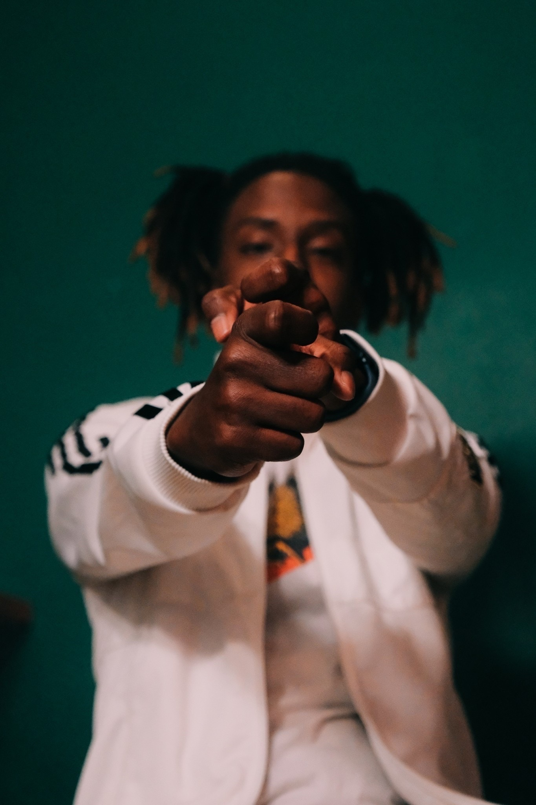
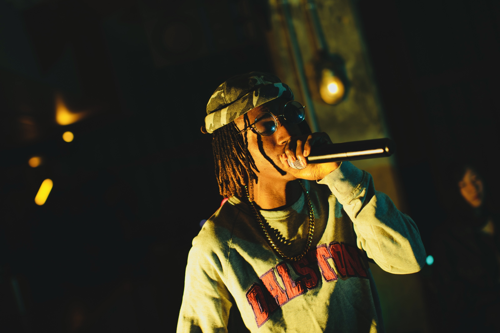
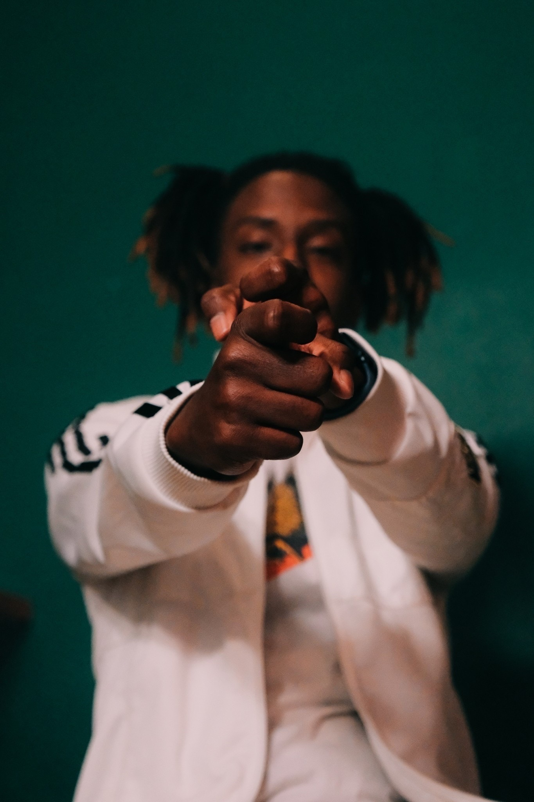
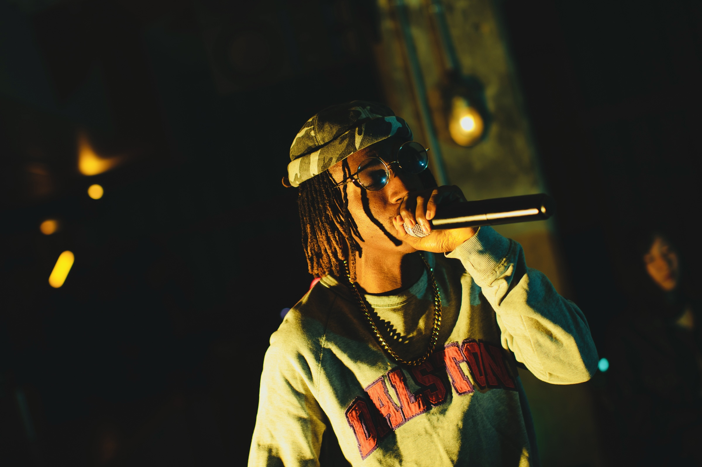

Biography
J the Protagonist is an American recording artist hailing from Oxon Hill, MD and currently living in Kawasaki, Japan. His distinct voice and delivery, coupled with impressive vocal range, is what makes this artist special. From boom bap, to trap, to R&B, no matter the beat or the sound, he knows how to leave his unique mark on any song. J the Protagonist released his first single “Daze Off” in 2020, followed by several more singles, produced by ghostpops. The artist is also featured on projects from Monsieur Jovoni, A. Valley, Teddy Robinson, Deza, Cheshire, Umbrella Boyz, Tokyo Marginal Arts and more. The music video for his song “Bullet Down” was also nominated for the 2022 Ninja Indies Film Festival. His song “Dead Eye” features in the ending scene of the Paramount Pictures film “Snag” He’s also done body-double work for Lil Uzi Vert! He is quoted as saying “ Hard work and talent have no choice but to pay off, in the end. If they haven’t paid off, it’s not the end yet.” His mixtapes “Good as Gold” and “Good as Gold 2” serenade the soul!
The Journey So Far...


 




A Few Music Videos
Interviews
Commercials/Press Releases
Contact
Email: Ballardjordan36@gmail.com
Phone: 080-6640-5868
Social Media: